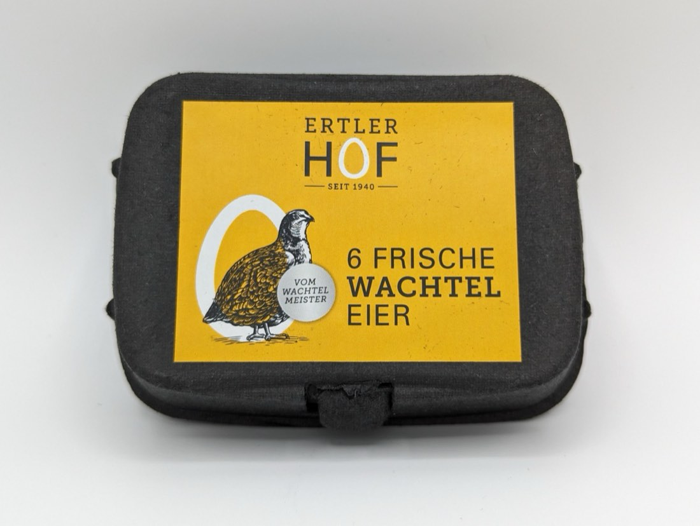
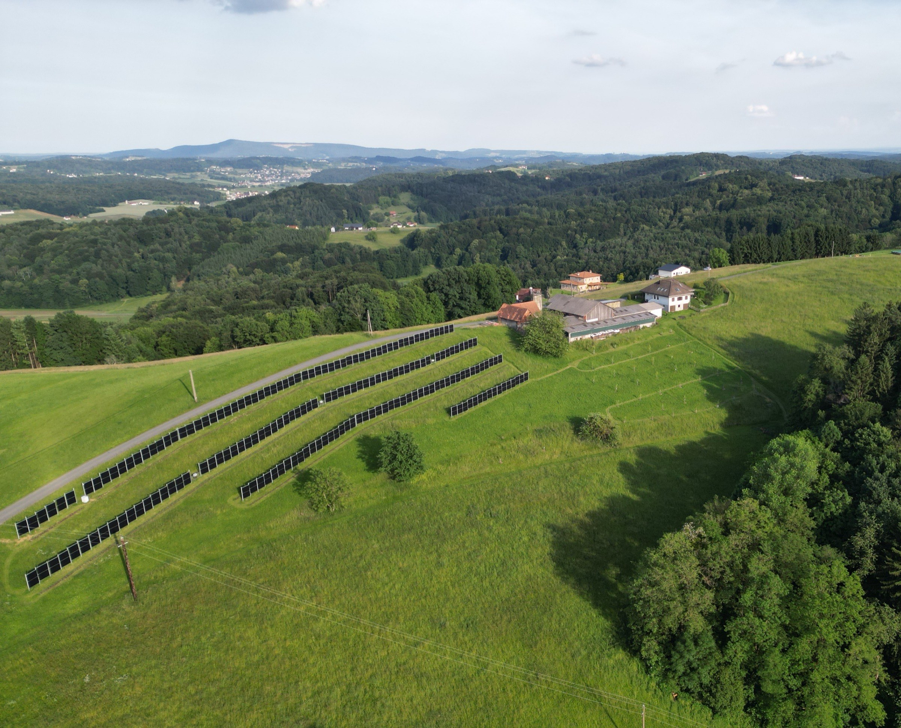
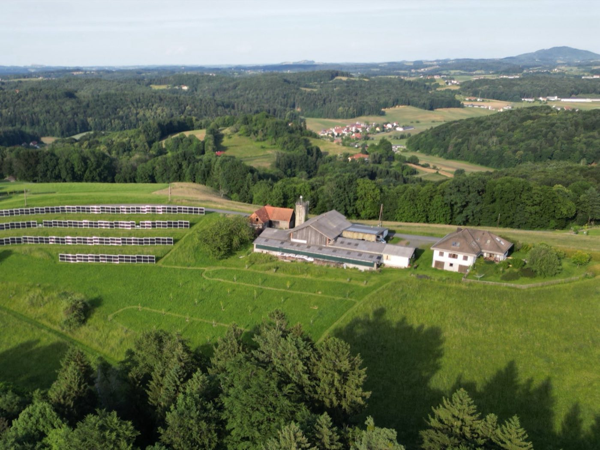
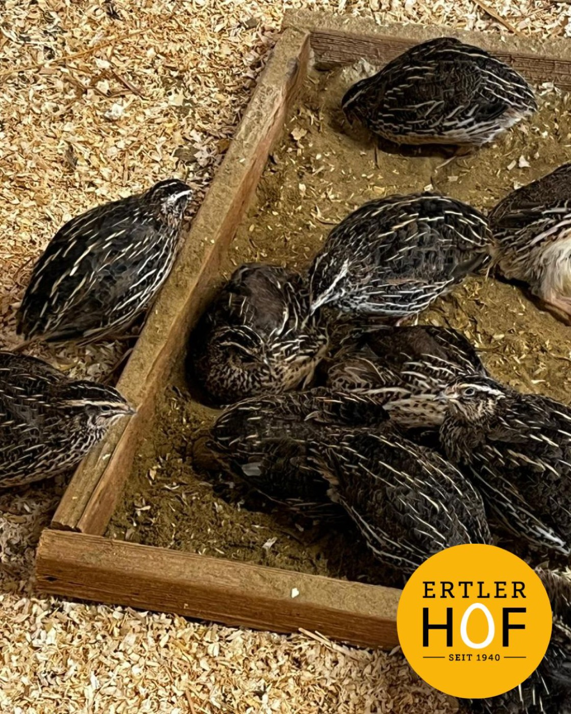
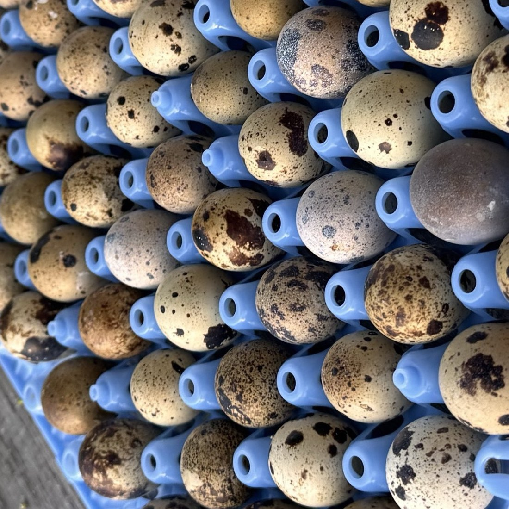
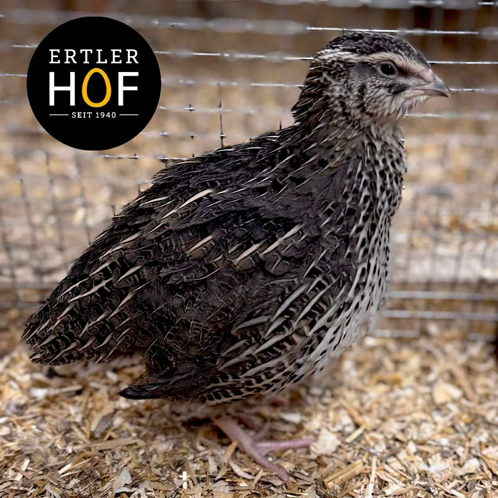
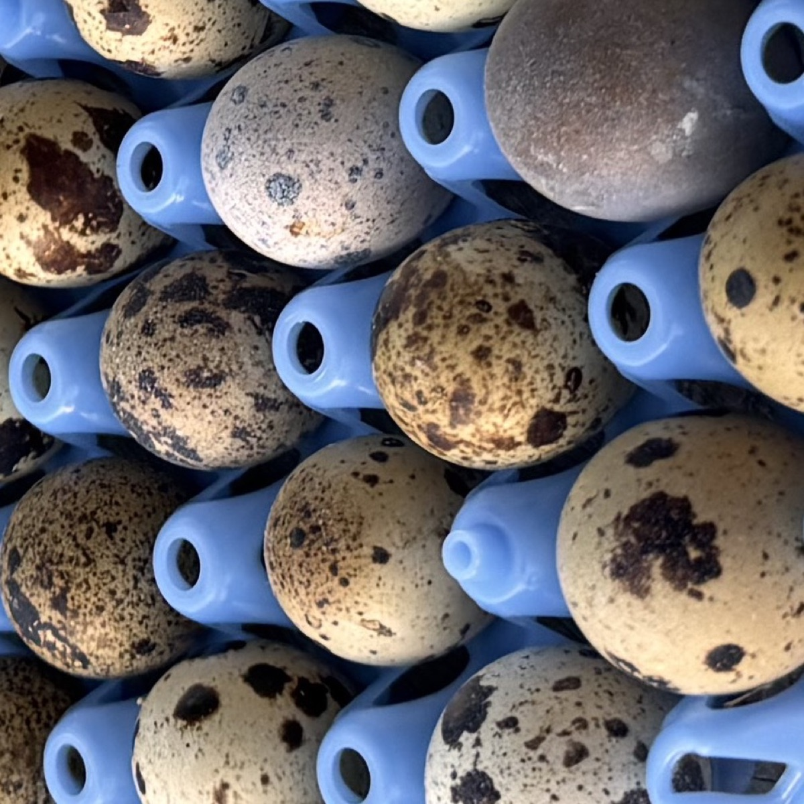
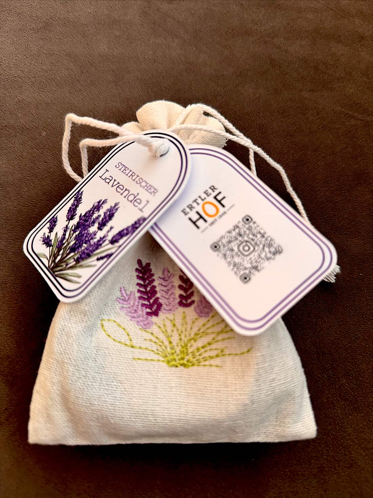
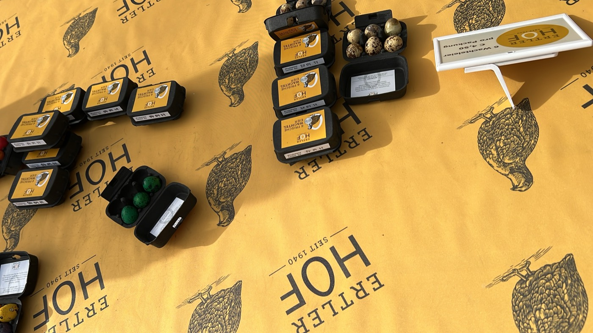
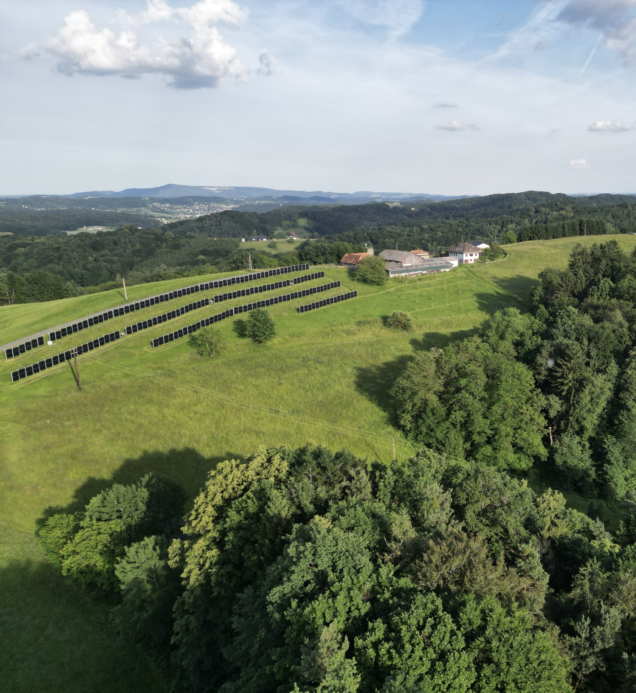

Wachteleier, 6er-Packung
Fein gesprenkelte Eier mit kräftigem Dotter — kleiner als ein Hühnerei, im Geschmack deutlich intensiver. Kühl und trocken lagern, der Kühlschrank ist nicht nötig.
€ 4,50 je Packung à 6 Stück

Seit 1940 wird hier gewirtschaftet, heute in dritter Generation. Unsere japanischen Legewachteln haben Platz, Licht und Ruhe — und das schmeckt man.
Ein weißes Fellknäuel kommt einem entgegengeschossen — der Hofhund, der darauf achtet, dass am Hof alles rund läuft. Nicht nur die Wachteleier.
Links das Haupthaus, rechts die Ställe, der Geräteschuppen und der Heuboden. Dazwischen der Hofplatz, und mittendrin der Wachtelstall. Rundherum grüne Blumenwiesen und Äcker, gesäumt von Wald mit Brombeerhecken, Farnen und Gebüsch. Wenn man davor steht, fragt man sich, wie ein so schöner Ort die Adresse Höllgrund haben kann.

Ein Hof, drei Generationen. Wissen, das weitergegeben wird — und Entscheidungen, die länger gedacht sind als eine Saison.
Ein für Wachtelverhältnisse sehr großer Stall, Sandbad, Rückzugsorte und frische Zweige aus dem eigenen Wald.
Kurze Wege, klare Herkunft. Unsere Eier gehen an Küchen und Kundinnen in der Steiermark — nicht um die halbe Welt.
Wir machen lieber wenige Dinge richtig als viele halb. Qualität braucht Geduld, beim Tier wie am Feld.
Wachteln sind neugierige, sensible Tiere. Bei uns leben rund 200 japanische Legewachteln in einem Stall, der für Wachtelverhältnisse sehr geräumig ist.
Sie graben sich an bequemen Orten ein bisschen ein, spielen mit den anderen verstecken, snacken Würmer und fliegen hin und wieder eine Runde durch den Stall. Weil sie so neugierig sind, bringt David ihnen regelmäßig frische Zweige und Farne aus dem Wald mit — für neue Verstecke und weiche Nester.
Jeden Monat brüten wir selbst Nachwuchs aus. Dadurch bleibt die Herde immer in Bewegung und wir können durchgehend liefern — auch dann, wenn andere gerade nichts haben.
Bei Wachteln ist die Käfighaltung in Österreich noch bis Ende 2030 erlaubt — bei Legehennen ist sie seit 2020 verboten. Frag deshalb immer nach, wie die Tiere gehalten werden und ob du den Stall sehen darfst. Bei uns ist die Antwort ja.

kauften Cäcilia und Franz Ertler sen. den Hof, vulgo „Bergsteffl“.
japanische Legewachteln, die wir alle persönlich betreuen.
im Jahr brüten wir Nachwuchs aus — für eine durchgehende Verfügbarkeit.
Wir machen nur, was wir richtig machen können: frische Wachteleier zum Essen, Zuchttiere für alle, die selbst Wachteln halten möchten, und Lavendel von unseren Flächen — direkt vom Hof, ohne Umweg.

Fein gesprenkelte Eier mit kräftigem Dotter — kleiner als ein Hühnerei, im Geschmack deutlich intensiver. Kühl und trocken lagern, der Kühlschrank ist nicht nötig.
€ 4,50 je Packung à 6 Stück

Für Küchen: 72 Eier in einer blauen, wiederverwendbaren Lage. Die Lage kommt beim nächsten Mal wieder zurück zu uns — kein Verpackungsmüll.
€ 36,00 je Lage à 72 Stück

Lebende japanische Legewachteln aus eigener Zucht. Robust, gesund und an den Umgang mit Menschen gewöhnt — ein guter Start für den eigenen Bestand.
€ 10,00 Weibchen · Männchen € 5,00

Befruchtete Eier für die eigene Brut. Von denselben Tieren, aus denen auch unser Nachwuchs schlüpft.
€ 2,00 pro Stück

Duftsäckchen aus Leinen, gefüllt mit Lavendel von unseren Flächen. Für den Kleiderschrank, das Auto oder als kleines Mitbringsel.
Preis auf Anfrage Duftsäckchen

Am liebsten geben wir unsere Eier persönlich weiter: direkt am Hof in Höllgrund 3, nach kurzer Anmeldung per Telefon. Dazu beliefern wir regelmäßig Restaurants und Feinkostbetriebe in Graz und der Oststeiermark.
Und zwischen Feldbach, St. Stefan im Rosental und Graz liefern wir gerne auch direkt zu dir — egal ob eine Packung für zu Hause oder mehrere Lagen für die Küche.
Über unseren Wiesen steht eine Agri-Photovoltaik-Anlage mit 161 kWp. Die Module stehen in Reihen über der Fläche — darunter wird weiter gemäht und bewirtschaftet. Landwirtschaft und Energie schließen sich nicht aus, sie teilen sich denselben Hang.
Über die Energiegemeinschaft eg-austria.at können wir diesen Strom in ganz Österreich weitergeben — nicht nur in der Nachbarschaft. Wenn dich das interessiert, melde dich einfach bei uns.

Ob eine Packung Eier für zu Hause oder eine regelmäßige Lieferung für die Küche — am schnellsten geht es per Telefon.